يفحص الأداة أغلفة منتجاتك (الدقة، الوضوح، الإضاءة، حجم المنتج في الإطار، الخلفية) ويعطي لكل ملاحظة حلاً، ثم يطبّق نمط متجرك أو مشهداً ذكياً على المنتجات المحدّدة بمعاينة قبل وبعد.
صور توضيحية لفئات منتجات متنوعة وتنويعات اللون والموديل، وهي إلهام بصري وليست نتائج الأداة لمنتجاتك.
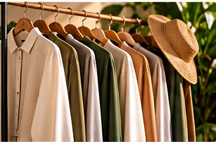
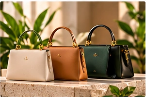
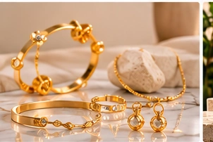
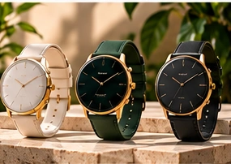
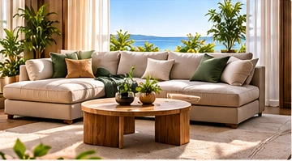
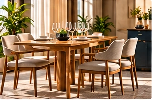
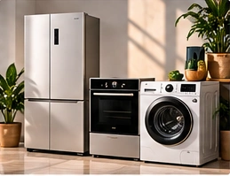
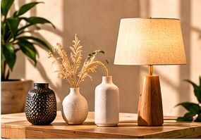
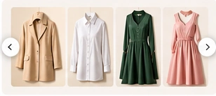
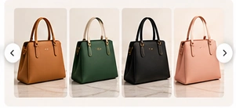
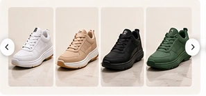
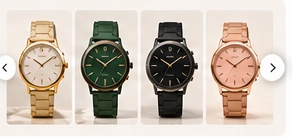
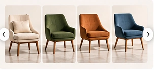
كل ملاحظة تظهر معها طريقة معالجتها. حدّد المنتجات التي عليها ملاحظات وطبّق نمط المتجر أو المشهد الذكي، وراجع قبل وبعد قبل أن تعتمد، والأغلفة القديمة تبقى في صور المنتج.
من الصورة إلى النتيجة في دقائق.
اضغط «افحص جودة الأغلفة» وراجع الملاحظات.
ابدأ بالمنتجات التي عليها ملاحظات.
نمط المتجر أو مشهد ذكي، ثم «اعتمد وانشر».
مؤشرات جودة لكل غلاف منتج.
مجانية — تعمل داخل متصفحك بلا مفتاح
إجابات سريعة عن أكثر ما يُسأل.
لا تنشئها من العدم؛ تفحص أغلفتك وتطبّق عليها نمط متجرك أو مشهداً ذكياً. الصور في المعرض أمثلة توضيحية لفئات يمكن أن يضمّها كتالوج.
الفحص ونمط المتجر مجانيان؛ المشهد الذكي يحتاج مفتاح Alyssum API وتظهر تكلفته قبل التنفيذ.
لا، تبقى في صور المنتج.
نعم، حدّد ما تريد وطبّق بموافقة واحدة.